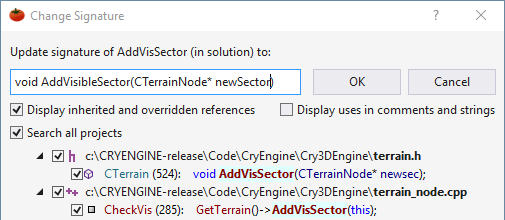

Change Signature
Change signature (Shift+Alt+Q) if you need to rename, reorder, or add/delete parameters of a method. Visual Assist infers the change from your new signature. Set the scope of the change, and then scan the references that will be changed. Change Signature can be undone if you make a mistake.

Learn more.